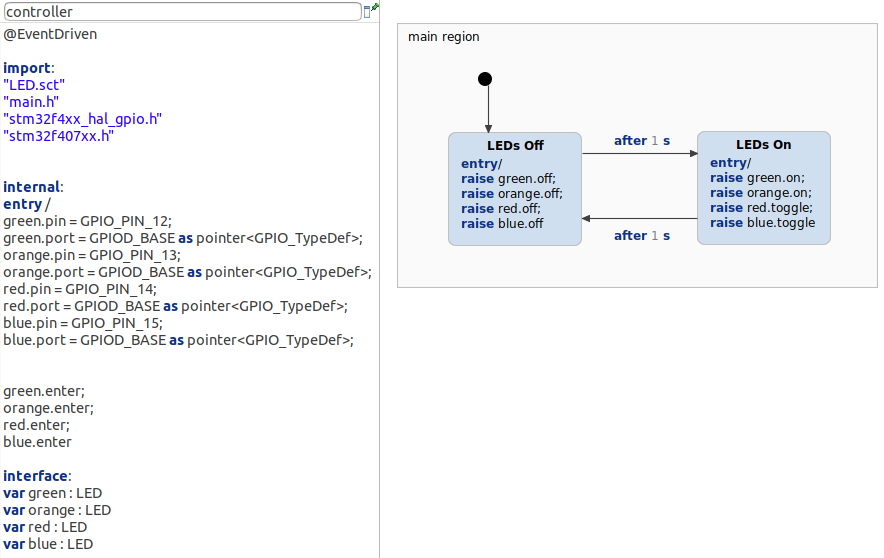

[Pro] STM32F407 Discovery Board Using Multi State Machines With Deep C Integration
This is an example for the integration of YAKINDU Statechart Tools with another IDE, here the STM32CubeIDE. The example model demonstrates the usage of the multi state machines feature together with the deep C integration to directly call functions from the HAL headers in the statechart model.
Additionally, there are significant benefits using multi state machines. Statecharts designed as configurable components can be reused for various applications. Reusing statecharts, which are already tested and in use, can significantly increase the application's quality. Moreover, changes must be handled only at one model, which allows adding new features and bug fixes to multiple applications at once.

This simple state machine consists of two states which control one LED, as defined by the pin and port variables. This LED state machine will be used as a submachine. Its configurable parameters will be set from the calling state machine (see below). This allows the user to change the port and pin easily.
The controller declares the submachines as variables. Each LED (green, orange, red, blue) will be paramaterized by setting their port and pin. After this, the submachines are entered. From now on the controller can simply raise the events (on, off, toggle) on the submachines.
Getting started
The configuration of the STM32F407VG has been realized with the CubeMX tool. The configuration can be adapted in the '.ioc' file. For this, a full installation of the STM32CubeIDE is required. You can find it HERE.
After downloading and installing the STM32CubeIDE, YAKINDU Statechart Tools Professional Edition must installed via the update site. You can follow these STEPS.
Configuration
In this example the configuration is quite simple. Four pins, which are connected to the four mounted LEDs, are configured as ouputs. The clock is set to its maximum of 168 MHz and the timer TIM5 works in interrupt mode, creating an interrupt every 1 ms, which is later on used for the timer.